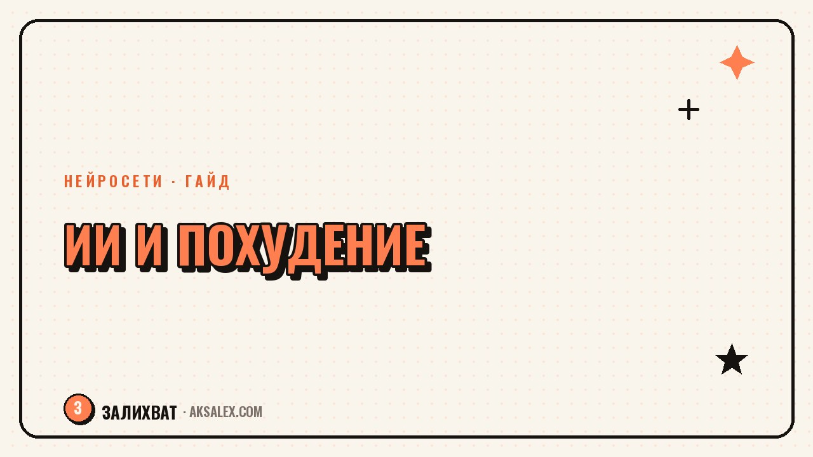

Лучшие нейросети для похудения: как помогает ИИ

Худеть тяжело не от нехватки воли, а от нехватки времени на расчёты: сколько калорий в тарелке, что приготовить из того, что есть в холодильнике, как изменить план, если сорвалась на тортик. Нейросети не станут твоим диетологом и не отменят визит к врачу при реальных проблемах со здоровьем, но снимают именно эту рутину - считают, предлагают варианты и подстраиваются под срывы без чувства вины. Разберём, какие нейросети для похудения реально работают и где их граница.
Что нейросеть может в похудении, а что нет
Нейросеть хорошо справляется с расчётами и рутинными вопросами: сколько калорий и белка в блюде, как собрать меню на день под заданную калорийность, какие продукты заменить, чтобы было вкуснее при той же пользе. Это экономит время, которое раньше уходило на таблицы калорийности и подсчёты в столбик.
Чего нейросеть не умеет - учитывать твои анализы, хронические заболевания и реальное состояние здоровья. Она не врач и не диетолог с лицензией, поэтому при щитовидке, диабете, расстройствах пищевого поведения или беременности решения по питанию принимает только специалист. ИИ здесь - помощник в быту, а не замена консультации.
Когда ИИ особенно пригодится
- Нужно быстро прикинуть калорийность обеда без весов и таблиц
- Не знаешь, что приготовить из того, что уже лежит в холодильнике
- Хочешь готовый план тренировок под твой уровень и свободное время
- Нужна мотивация и спокойный разбор срыва без самобичевания
Расчёт калорий и меню без диетолога
Текстовая нейросеть вроде ChatGPT или Яндекс GPT умеет прикинуть калорийность блюда по описанию и собрать меню на день под заданную норму - например, 1500 ккал с достаточным количеством белка. Это не лабораторная точность, а быстрая оценка, которой достаточно для повседневного контроля.
Удобная практика - фотографировать тарелку и просить мультимодальную нейросеть прикинуть состав и калорийность по фото. Точность ниже, чем у весов, но для привычки следить за питанием этого хватает: ты начинаешь видеть, где реально много калорий, а где кажется много, но на деле немного.
Примеры запросов для меню
- Собери меню на день на 1400 ккал с тремя приёмами пищи и одним перекусом
- Вот что есть в холодильнике: курица, гречка, брокколи, яйца - предложи два блюда на обед и ужин
- Посчитай примерную калорийность: тарелка пасты с сыром, 300 грамм
Нейросеть не взвешивает за тебя и не считает идеально. Она снимает барьер в виде таблицы калорийности, которую лень открывать пятый раз в день.
Планы тренировок и трекинг привычек
Для тренировок нейросеть собирает план под твои условия: домашние тренировки без инвентаря, зал три раза в неделю, прогулки при проблемах с суставами. Задача - описать уровень подготовки и ограничения честно, иначе план окажется слишком тяжёлым.
Отдельно ИИ полезен как дневник без осуждения: вечером пишешь, что съела и как прошла тренировка, а нейросеть помогает увидеть закономерность - срывы чаще случаются по пятницам или когда пропускаешь обед.
Что учесть при составлении плана
- Указывай реальный уровень подготовки, а не желаемый
- Называй ограничения по здоровью и травмы, если они есть
Какие сервисы выбрать: сравнение
Разные нейросети закрывают разные задачи похудения: одни считают калории, другие строят тренировки, третьи работают прямо как приложение-трекер с подсказками ИИ внутри.
| Сервис | Для чего | Доступ в РФ | Цена |
|---|---|---|---|
| ChatGPT | меню, калории по описанию и фото | нужен VPN | бесплатно с лимитом, Plus платно |
| Яндекс GPT (Алиса) | меню, советы по питанию | без VPN | бесплатно с лимитом |
| FatSecret | трекер калорий с базой продуктов | без VPN | бесплатно, расширенная версия платно |
| GigaChat | планы тренировок, дневник привычек | без VPN | бесплатно с лимитом |
Для старта достаточно одной текстовой нейросети без VPN плюс привычного трекера калорий - вместе они закрывают и расчёты, и контроль за день. VPN-сервисы вроде ChatGPT добавляют удобство фото-анализа тарелки, но это не обязательный шаг.
Когда ИИ не замена врачу
Если за похудением стоит реальная проблема - гормональный сбой, расстройство пищевого поведения, резкий набор или сброс веса без видимой причины - нейросеть не определит это и не должна лечить. Она может дать общий совет, который прозвучит разумно, но не увидит то, что видит врач на анализах и осмотре.
Разумный подход - использовать ИИ для повседневной рутины: меню, тренировки, учёт - а решения о диагнозах и серьёзных ограничениях в питании оставлять специалистам.
Частые вопросы
Какая нейросеть лучше для подсчёта калорий?
Для разовых прикидок удобны ChatGPT или Яндекс GPT - описываешь блюдо или присылаешь фото, и получаешь примерную калорийность. Для постоянного учёта лучше завести привычный трекер типа FatSecret, а нейросеть использовать для советов по меню.
Может ли нейросеть заменить диетолога?
Нет, нейросеть не видит твои анализы и не ставит диагнозы, а диетолог учитывает здоровье в целом. ИИ хорош для бытовых задач - меню, расчёт калорий, идеи блюд - но при хронических заболеваниях решение остаётся за врачом.
Как нейросеть помогает с меню из того, что есть дома?
Ты называешь продукты в холодильнике, а нейросеть предлагает несколько блюд под заданную калорийность или бюджет. Это удобно, когда лень идти в магазин, но не хочется есть что попало.
Можно ли доверять нейросети расчёт калорий по фото?
Точность ниже, чем у весов и точных таблиц, но для повседневного контроля этого достаточно. Погрешность чаще всего в пределах 10-20%, и для привычки следить за питанием это нормально.
Стоит ли платить за нейросети для похудения?
Для начала хватит бесплатных лимитов Яндекс GPT и привычного трекера калорий. Платная подписка оправдана, если ты много фотографируешь еду для анализа и упираешься в дневной лимит бесплатных запросов.
Раз тема оказалась полезной, вот что почитать следующим. Какие нейросети нужны воспитателю: планы занятий, игры, сказки и переписка с родителями.
Читать статью →а не вручную